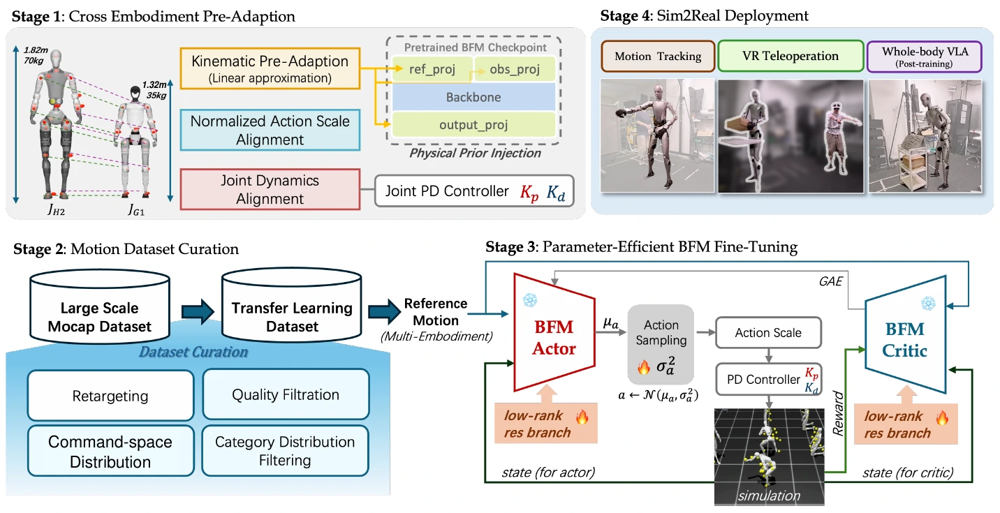
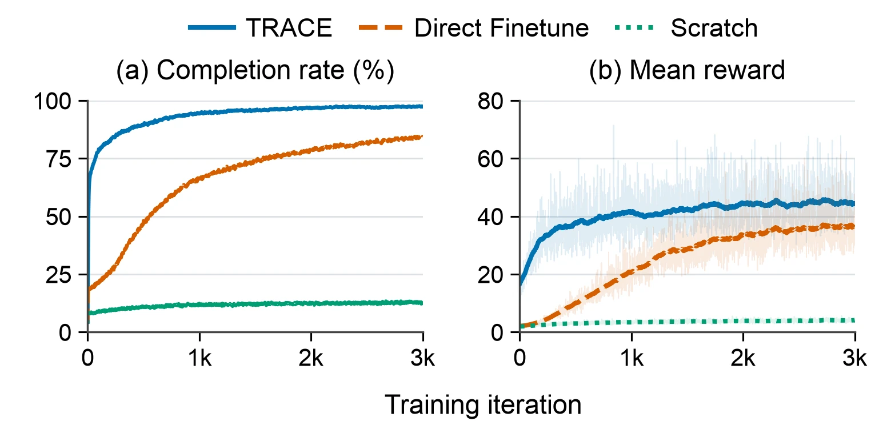

Align the embodiment
Inject kinematic priors into projection layers. Align action scales and nominal joint dynamics before training.
A foundation for the next embodiment
Efficient Transfer Learning for
Neural Whole-Body Control
Across
Humanoid Embodiments
From a pretrained motion repertoire
to a full-scale humanoid.
TRANSFER DIRECTIONUnitree G1 Unitree H2
Explore the researchReuse the knowledge. Adapt the control.
Humanoid behavior foundation models learn a rich repertoire of movement. TRACE brings that repertoire to a different robot by preserving pretrained motion representations and adapting feedback control to a new body.
Single-GPU adaptation
G1 → H2 · RTX PRO 6000Motion-tracking success
67,953 PHUMA motions · simulationCurated motion frames
Compact, quality-screened transfer setSuccess uses a height-scaled tracking threshold. Adaptation cost excludes source pretraining; GPU-hours are not normalized across hardware. Evaluation details ↗
Interactive playground
Explore whole-body motion tracking
and planner-controlled
locomotion.
The project in 170 seconds
From cross-embodiment adaptation
to whole-body skills on
hardware.
Narrated overview · 2:50 · English captions available
The approach
Align the embodiment, curate the motions,
then specialize
with low-rank adaptation.
Keep the pretrained motion language. Align the robot interfaces, distill compatible command tokens, and fine-tune the controller for the target dynamics.

Inject kinematic priors into projection layers. Align action scales and nominal joint dynamics before training.
Retarget and screen motion quality, balance categories, and select diverse commands within a 10M-frame budget.
Distill reference-encoder latents and tokens. Use LoRA and a two-phase PPO curriculum to specialize feedback control.
Reuse the adapted controller for dynamic tracking, whole-body teleoperation, and VLA-driven interaction.
On the real robot
Large posture changes, dynamic balance,
and contact-rich
whole-body interaction.
Dynamic whole-body reference tracking on the full-scale Unitree H2.
Hardware · 1× speedReal-robot footage from the project’s demonstration materials. Individual demonstrations illustrate capabilities; quantitative evaluations are reported separately below.
Measured transfer
Evaluated on held-out motions
and downstream hardware tasks.
Simulation height-error thresholds: 0.250 m for G1 and 0.3447 m for H2. Each motion must stay within the threshold at every evaluated frame. Success rates use body-size-adjusted tolerances.
| Task | Control | Success |
|---|---|---|
| Relocate a toy | Single-arm | 90% |
| Relocate a cube | Bimanual | 75% |
| Pick up a pillow | Whole-body | 80% |
| Open a door | Whole-body | 65% |
| Open a trash can | Whole-body | 65% |
GR00T-N1.7 post-training uses demonstrations collected through the transferred whole-body controller. Tasks share the H2 low-level controller and motion interface.
Read the complete evaluation
TRACE uses a two-phase curriculum: establish broad tracking first, merge and reset the LoRA adapters, then emphasize difficult motions. The reported endpoint comparison reduces root-position error by 26.2% relative to single-phase adaptation.
Training curves show one run per method under a common motion-sampling distribution, with difficulty-based oversampling disabled. The approximately eight GPU-hour adaptation excludes SONIC pretraining; hardware differs from SONIC’s reported 21,000 GPU-hour reference.
Build on a learned foundation